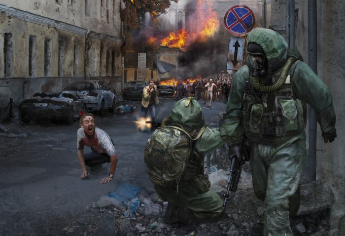

1) Закрыть все окна и двери чтобы мертвяки не пробрались к тебе!!!
2) Проверить запасы еды воды!!
3) Посмотреть какое-то оружие от ножа до топора
4) Затем посмотреть в глазок в двери е сть ли там мертвеки
5) Если нет не кого выходите осторожно!!!
6) Самое главное правило не когда не кричите!!!!!!!!!!!!!!!!!!!!!!!!!
7) Если ва вышли на улицу НАЙДИТЕ МАШИНУ ЭТО ОЧЕНЬ ВАЖНО!!! Надо внедорожник
8) Если раздобыли машину тогда приедте к самой ближайшой аптеке магазину и к заправке!!!!